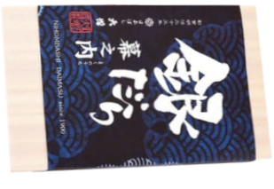
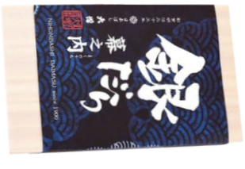
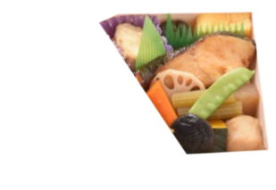
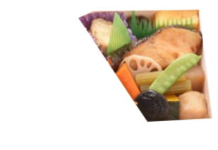

 



Available at Yonezawa Station, along with others on the Yamagata
Shinkansen line, for 1,250 yen.
This beef-bowl style bento box features fluffy Domannaka rice made
in Yamagata Prefecture topped with minced beef and sauteed beef
slices cooked with a special tare sauce.
The bento was launched the year after opening the Yamagata
Shinkansen and is now an ekiben train station lunchbox that is
famous throughout Japan.
source
Available at Tokyo Station for 1,380 yen.
Makunouchi bento means "between-act bento", referring to
bento's origins as a meal for theater-goers. Now, makunouchi
generally refers to larger bento that attempt to contain every
flavor and ingredient that is quintessential to Japanese taste.
You can find some form of makunouchi at nearly every railstation
in Japan.
This particular bento's unique feature is gindara or
sablefish, served grilled and seasoned with a yuzu-miso sauce.
source
Available at Nishi-Akashi Station for 1,080 yen.
This famous bento features octopus, conger eel, and seasonal
vegetables packaged in a special clay pot made to look like
one of the barrel-shaped octopus traps traditionally used in
Japan.
The name hipparidako-meshi is an expression, literally
meaning "pulled octopus", which is used to refer to someone who is
so popular that they continually receive invitations and offers
like an octopus beingd pulled in different directions.
source
Minced and sauteed beef over rice.
Assortment of small sides, including seaweed (nori), fish cake, egg omelet (tamago), and pickled ginger.
A large portion of rice featuring a pickled plum in the center, evoking the Japanese flag. On the side is some pickled seaweed (nori).
Gindara, or sablefish, alongside omelet (tamago), kamaboko fish cakes, pickled eggplant, fried chicken with yuzu pepper seasoning, and soy-mirin seasoned assorted vegetables (butterbur, burdock, carrot, shiitake mushroom, lotus root, pumpkin, peas, konnyaku and taro root).
Octopus (tako), conger eel (unagi), and seasonal vegetables.